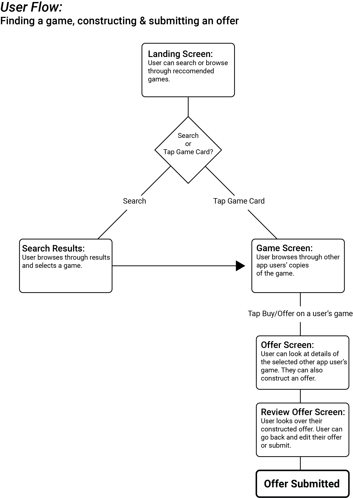
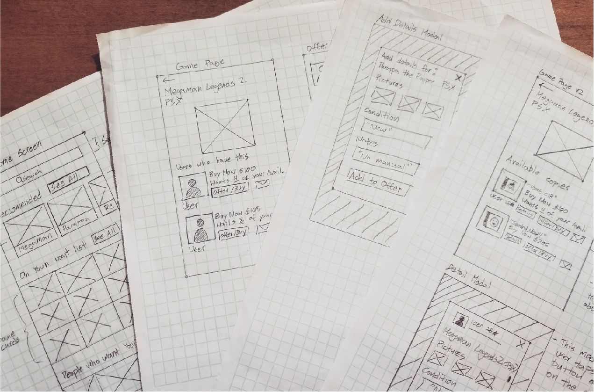
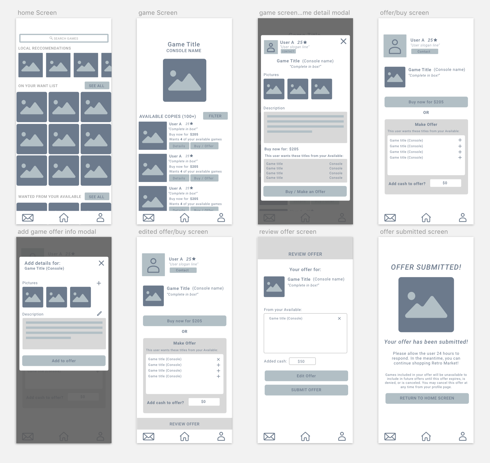
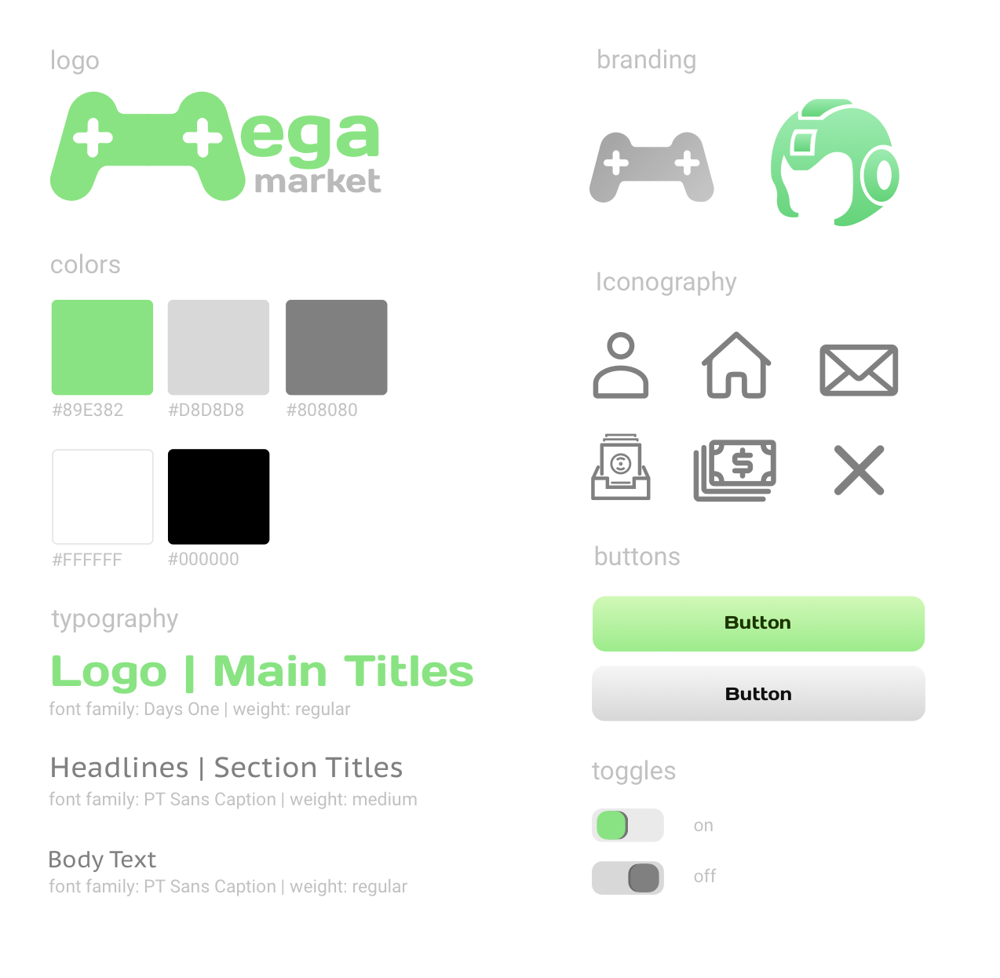
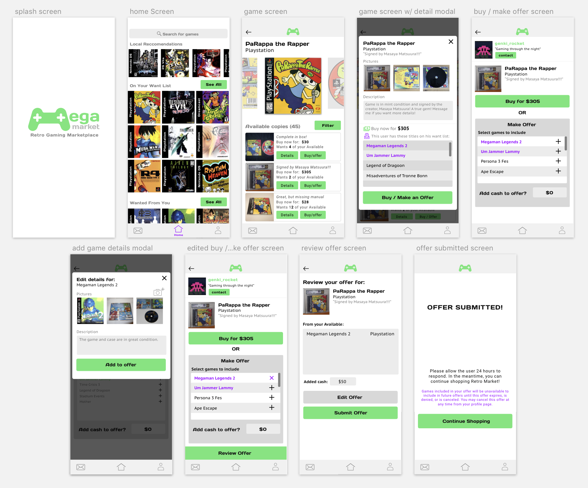

Mega Market App Concept
UX/UI Case Study by Kyle Abarquez

Project Summary
Mega Market is an app concept that aims to help retro game collectors in building their collections via purchases and trades with other hobbyists. Inspired by apps such as Letgo and Mercari, Mega Market aims to streamline the process of listing, finding, and obtaining games- with an emphasis on community interaction.
For this project, I chose to first hone in on designing a user flow that represents the main functionality of the app. This is the flow of a user finding a game, constructing an offer for that game, and submitting that offer. In addition to designing this user flow, I also created a cohesive visual design along with some branding to give the app distinct character.
Product Concept
"Retro game collecting with an emphasis on trades and community"
Mega Market is a concept born from personal interest. I enjoy collecting and playing retro games but wish there was a more interactive and specialized app to cater towards retro game enthusiasts like myself. These days, a lot of game collecting is done through ebay. While convenient, it isn’t really too much fun to buy from a faceless ebayer. I wanted to make a specialized app for game collectors in which they can interact with other collectors through trades, purchases, or discussion about the hobby.
Research and Planning

I started by looking at apps similar in functionality to my concept. I studied design patterns used by apps such as Depop, Mercari, and Letgo. While looking at these apps, I would think about which patterns would be adaptable to work with my concept.
I also looked at video game collecting websites to help me nail down the type of information and features that would be essential to include and present to the user of the app. This research combined with my own personal knowledge as someone in the hobby helped to really place myself in the mindset of an intended user.
Flow Charting
From here, I began planning a user flow in the form of a flowchart. By this point in the planning process, I had a pretty good idea of the information I needed to present to the user. I made a simple flowchart noting the intended action to be taken by the user at each stage of the flow. This flowchart would serve as a sort of road map for me to follow during the screen design process.

The Paper Sketches

The design process begins by churning out quick sketches for possible screen layouts. I like to come up with at least 3 ideas/variations per screen and then decide on the design that best presents the necessary information in the most efficient way.
Once I was satisfied with the basic screen designs, I laid out a flow of higher fidelity paper screens with notes to give more context (pictured above). It is at this stage where I really solidify how I want the user to receive and interact with the information presented in the interface.
Lo Fi Wireframes & Usability Testing

The next step was to translate my paper sketches into low fidelity prototype screens. My goal at this stage is to make a prototype that a user would be able to interact with for usability testing. I made the screens with Sketch App and used Invision to make it interactive.
Once the prototype was complete, I did some testing. The way I tested my user flow was by giving some of my friends the task of finding a game, and making an offer for that game and then observing how they interacted with the interface while taking note of any hang ups and questions they ask. Some of my findings are listed below.
User thought a static piece of information was a button
User had trouble comprehending wording on certain headings
User wanted more information about a game
Some text was too small to read comfortably
User had trouble comprehending wording on certain headings
User wanted more information about a game
Some text was too small to read comfortably
With these pain points noted, I went back and made the necessary changes to the design. Once the revisions were made I decided that it was time to begin working on the visual design of the product.
Nailing Down a Visual Style

I wanted to give the app a look that was sleek but also fun to fit the theme of video games. I felt like a color scheme of purple with greys combined with the “Days One” font face gave the app a nice techy feel that wasn’t overly serious. I chose some minmalist icons with distinct rounded edges to match the main font as well as the logo.
High Fidelity Screen Design

These are the high fidelity screens I designed and used for the finished prototype. You can click through the prototype yourself here.
For the Future...
I’m happy that through the design of this flow helped me in solidifying a proof of concept for the app. The big picture of the app includes more features such as collection archival, listing creation, member to member discussion, and more. These are all things that I would like to design solutions for. In doing so, I will be improving my design chops while making the concept even more solid for possible future develoment.